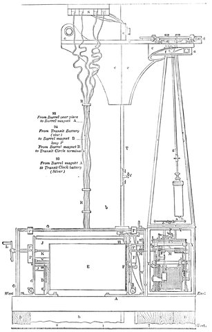
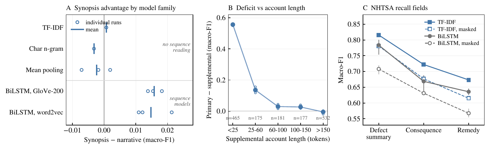

The record is part of the task
One case, several records of it, and which one the model reads turns out to be part of the experiment.
OneA measurement question
Take one repair of a cockpit display unit. When the unit comes off the aircraft the operator writes "display blanks intermittently in flight". After diagnosis the shop technician writes a finding that names the failed board. The parts system records what was replaced. Three records, one case, produced at different points of the workflow by people who knew different things. A classifiera trained to predict the repair from text can be evaluated on any of the three. The literature normally picks one, silently, before the model comparison starts, and treats the pick as data preparation. This theme asks what that pick does to the result, and what it should do to how results are reported.
"In this method of observation every observer differs slightly in his judgment of the instant that the star crosses the wire, and his estimation differs from the truth by a certain constant quantity which he must always allow for; this error is called his personal equation." J. Norman Lockyer, Stargazing: Past and Present, 1878 [1]

TwoWhat hangs on it
Maintenance and safety text is one of the largest written accounts we have of how engineered systems fail, and the technical language processing agenda exists because so little of it is used [3]. Every published claim about which model reads such text best is a claim relative to a record. If the record moves the score more than the model does, then rankings established on one field do not transfer to another, and a system evaluated on a record written after the outcome will look better than it can ever be at the point where a decision is taken. Studies of data quality in work orders [4] and of provenance confounding in clinical notes [5] point the same way from other fields. The astronomers' lesson is older still: a measurement carries the process that produced it, and the honest response is to characterise that process, not to pretend it away [2].
ThreeThe neighbouring evidence
Aviation safety reports have been classified by machine for a decade, usually from the analyst's synopsis or the reporter's narrative, seldom from both [6, 7]. Work-order research has shown that field quality dominates downstream analysis [4], and clinical NLP has begun to treat the institution that wrote a note as a confounder to adjust for [5]. What was missing was a design that holds the case, the label and the split fixed and varies only the record, so that the record effect can be put on the same scale as the effects of representation and architecture that papers normally report.
FourWhat we found
Peter Mayhew's PhD with GE Aerospace, which I supervise, produced the first study [8]. The manuscript that followed [9] compares matched records of the same cases in three reporting systems: GE repair events, NASA's Aviation Safety Reporting System, and the NHTSA vehicle recall database. On the industrial events, reading a different field of the same events moved held-outb performance by more than any representation or architecture change we tested, and two fields written before the outcome was known differed by a wide margin. The public systems showed that record effects take different forms. In NHTSA one field stays strongest under every model family. In ASRS the analyst's synopsis beats the reporter's narrative, but only under models that read sequence. Some conclusions about modelling approaches flipped with the record. Earlier work on construction cost documents [10] and on helpdesk tickets [11] had taught me the same lesson from a different direction: the field you are handed is a design decision someone else made.

FiveWhere a project could start
- Evaluation at the decision point: A protocol that scores a classifier on the record that exists when the decision is actually taken, and reports how record and label were produced, instead of on the richest record in the archive. PhD
- Label provenance: How much of a score is the label-generating process, and how to audit that before comparing models at all. MSc or PhD
- The same design in another domain: Clinical notes, incident reports, insurance claims and support tickets all have the multi-record structure. Is the record effect as large there, and does it take the NHTSA form or the ASRS form? MSc
- Summaries as records: An analyst synopsis is itself a model of the case, and it won under some models and lost under others. Where summaries written by large language models sit in this picture is open, and rather urgent. MSc or PhD
- Documentation as a design lever: If the field written before the outcome carries most of the usable signal, what should we be asking people to write down, and how short can it be? PhD
Notes
a By a classifier I mean a machine learning model that assigns each input, here a piece of text, to one of a set of categories. ↩
b Held-out cases are set aside before any training and used only for the final score, so the model is judged on data it has never seen. ↩
References
- Lockyer, J. N. (1878). Stargazing: Past and Present. Macmillan, London. Project Gutenberg ebook 53172. gutenberg.org/ebooks/53172
- Schaffer, S. (1988). Astronomers mark time: discipline and the personal equation. Science in Context, 2(1).
- Brundage, M. P., Sexton, T., Hodkiewicz, M., Dima, A. and Lukens, S. (2021). Technical language processing: unlocking maintenance knowledge. Manufacturing Letters, 27, 42-46. doi:10.1016/j.mfglet.2020.11.001
- Conte, A., Bolland, C., Phan, L., Brundage, M. and Sexton, T. (2021). The impact of data quality on maintenance work order analysis: a case study in historical HVAC maintenance work orders. Proceedings of the PHM Society European Conference. doi:10.36001/phme.2021.v6i1.2814
- Ding, X., Sheng, Z., Yetişgen, M. and Chen, T. (2023). Backdoor adjustment of confounding by provenance for robust text classification of multi-institutional clinical notes. AMIA Annual Symposium Proceedings.
- Tanguy, L., Tulechki, N., Urieli, A., Hermann, E. and Raynal, C. (2016). Natural language processing for aviation safety reports: from classification to interactive analysis. Computers in Industry, 78. doi:10.1016/j.compind.2015.09.005
- Robinson, S. D., Irwin, W. J., Kelly, T. K. and Wu, X. O. (2015). Application of machine learning to mapping primary causal factors in self-reported safety narratives. Safety Science, 75. doi:10.1016/j.ssci.2015.02.003
- Mayhew, P., Ihshaish, H., Deza, J. I. and del Amo, A. (2023). Maintenance automation using deep learning methods: a case study from the aerospace industry. Artificial Neural Networks and Machine Learning, ICANN 2023, LNCS 14263, 295-307. doi:10.1007/978-3-031-44204-9_25
- Ihshaish, H., Mayhew, P., Zayet, T. M. A. and del Amo, A. (2026). The record is part of the task: matched-record evaluation of text classifiers across maintenance, safety, and recall reporting. Manuscript, with a journal. Not yet peer reviewed. Preprint and codebase on request; public-data reproduction at github.com/ihshaish/source-variation.
- Deza, J. I., Ihshaish, H. and Mahdjoubi, L. (2022). A machine learning approach to classifying construction cost documents into the International Construction Measurement Standard. arXiv:2211.07705. Code: github.com/ihshaish/BoQ-classifier-ICMS
- Nicholls, R., Fellows, R., Battle, S. and Ihshaish, H. (2022). Problem classification for tailored helpdesk auto-replies. ICANN 2022. doi:10.1007/978-3-031-15937-4_37